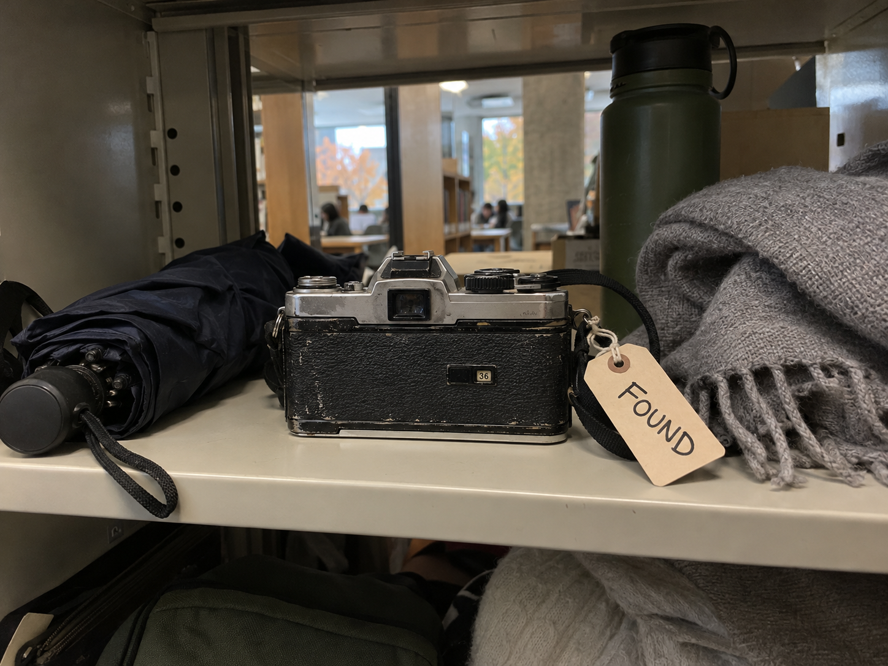
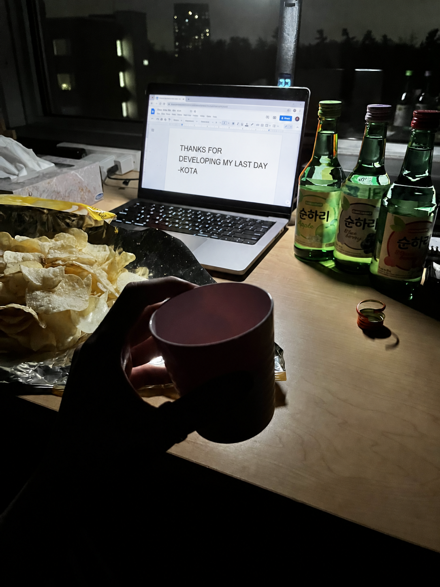

A camera nobody claimed
This film camera has been sitting on the library's lost-and-found shelf for weeks. The counter says 36, so every frame on the roll has been shot, but nobody ever developed it.
The darkroom
Click a negative to drop it into the developer tray, then wait for the image to come through. You can take your prints to the light table at any time and come back for more.
Closely investigate each print
Here, you can choose a print, then investigate it. Click the part of the photo that might look important.
Clue Board
Here, you can review the clues you've found and try to piece together the story.
Where is the camera's owner?
Frame 36
The last negative won't come through in the tray. Three empty boxes are printed along the edge of the film. Maybe the numbers you found on the roll fit.
